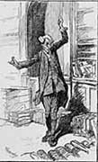
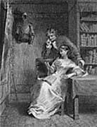
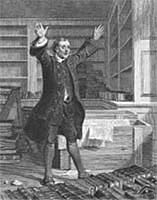

|
|
Home | Corson
Collection | Biography | Works | Image
Collection | Recent Publications | Portraits | Correspondence | Forthcoming
Events | E-texts | Contact
Library Sites
and Bibliographical Resources
|
|

|
 |
In addition to the sites listed below, users
should consult pages on Edinburgh University Library's Corson
Collection and Laing
Collection.
- Library
Collections and Archives
- Images from
Library Collections
- Databases
- Online
Bibliographies
1. Library Collections
and Archives
-
Manuscript
Collections, National Library of Scotland - In addition
to the largest collection of Scott correspondence, the National
Library of Scotland holds the principal surviving portion
of the autograph manuscript of Waverley and
the manuscripts of Marmion, The
Lord of the Isles, The
Heart of Mid-Lothian, Redgauntlet, The
Betrothed, The
Fair Maid of Perth, Chronicles
of the Canongate, Quentin
Durward, and The
Life of Napoleon. Other treasures are the fragmentary
autobiography known as the Ashestiel Manuscript and the Interleaved
Set of the Waverley Novels used by Scott in the preparation
of the Magnus Opus edition of his novels. In addition, the
library holds galley- and page-proofs, a wide selection of
personal documents, and over 2,000 printed volumes.
- Bernard
C. Lloyd Collection, Aberdeen University Library - Aberdeen
University Library has recently acquired the Bernard C. Lloyd
Collection, 'generally understood to be one of the most comprehensive
collections of Sir Walter Scott printed books ever assembled'.
It contains almost every edition of every work written or edited
by Scott and published during his lifetime, works to which
he contributed, and works derived from Scott such as songs,
playscripts, libretti, chapbooks, illustrations and parodies,
together with catalogues, biographies and criticism. This page
gives a description of the collection and a link to Aberdeen
University Library's OPAC.
- Pierpont Morgan Library,
New York - After the National
Library of Scotland, the Pierpont Morgan Library is the
most important repository of Walter Scott manuscripts (including
over 500 items of correspondence). The Scott holdings are catalogued
in CORSAIR,
the Library's OPAC.
- National Archives of Scotland -
Over 300 items of Scott correspondence are held at the National
Archives of Scotland and are searchable via the online
catalogue.
- Fales
Library, New York University - The Fales Collection, donated
by DeCoursey Fales in 1957, contains over 200 items of Scott-related
correspondence together with manuscripts of his work and an
extensive book collection. The books are entered on the online
catalogue of New York
University Library and the letters are catalogued in the Millgate
Union Catalogue.
- Sir
Walter Scott Collection, Beinecke Rare Book and Manuscript
Library - This page gives a full list of the Scott manuscripts
(including almost 200 items of correspondence) held by the Beinecke
Library at Yale University. For Scott-related material
in other collections, use the Finding
Aid. The letters are fully catalogued in the Millgate
Union Catalogue.
- British Library - Together
with an extensive printed collection, the British Library has
important Scott manuscript holdings, including over 100 items
of correspondence. Users are advised to consult the printed volumes
of the Library Catalogue in addition to the Manuscripts
Catalogue and OPAC.
The letters are all catalogued in the Millgate
Union Catalogue.
- Huntington Library -
The Huntington Library, San Marino, California, holds over 100
items of correspondence, all catalogued in the Millgate
Union Catalogue.
- Berg
Collection, New York Public Library - The Henry W. and
Albert A. Berg Collection of English and American Literature
contains over 80 items of Scott-related correspondence together
with holograph manuscripts and rare editions. A collection-level
record of the Berg's manuscript holdings of Scott is accessible
via New York Public Library's on-line catalogue, CATNYP.
For the printed volumes, check the catalogue published in 1983
by G.K. Hall or inquire directly at the Berg Reading Room.
The letters are catalogued in the Millgate
Union Catalogue.
- Sir
Walter Scott Collection, Watkinson Library, Trinity College -
A Description of the Sir Walter Scott Collection of manuscripts
(including almost 80 letters) at Watkinson
Library, Trinity College, Hartford, Connecticut. The collection
was donated by Dr Norton Downs, a former lecturer in Medieval
History at Trinity College. Additional information is available
in a card file. The letters are catalogued in the Millgate
Union Catalogue.
- Hunter-Baillie
Collection, Royal College of Surgeons of England - This
page describes the Hunter-Baillie Collection at the Royal
College of Surgeons, which contains 66 letters from Scott
to the poet Joanna Baillie, one to her brother, Matthew Baillie,
Physician Extraordinary to George III, and two to her sister-in-law
Sophia. A collection-level record of the Hunter-Baillie papers
is available via SurgiCat,
the online catalogue of the College's museum and archive collections.
The individual letters are currently catalogued in the Millgate
Union Catalogue.
- Brotherton
Collection, Leeds University Library - This collection,
bequeathed by Lord Brotherton of Wakefield, contains important
Scott manuscripts, including over 60 letters. The correspondence
is catalogued in the library's Letters
Database and in the Millgate
Union Catalogue.
- The
Signet Library - The Signet Library, Edinburgh, is a private
library funded by the subscriptions of the members of the Society
of the Writers to Her Majesty’s Signet. It holds 74 letters
from Scott, mostly to James
Ballantyne, which are catalogued in the Millgate
Union Catalogue.
- The
Advocates Library - The library of the Faculty of Advocates,
Edinburgh, contains important items of Scott correspondence
listed in the Millgate
Union Catalogue.
- Maitland
Club Fonds, University of Calgary Library - The Maitland
Club was founded in 1828 in Glasgow for the 'cultivation of
the literary antiquities of Scotland'. The Fonds, consisting
of four bound volumes, includes correspondence between Scott
and John Kerr, a founder member of the Club.
- Special
Collections in Scottish Literature and Theatre, Stirling University
Library - This page includes a brief description of the
Walter Scott Collection donated by Mr Burt Eddy Taylor of Michigan.
It is accompanied by a clickable image of the first edition
of Scott's Life of
Napoleon Buonaparte (1827). The collection itself is
listed in the library's online
catalogue.
- Royal
College of Surgeons, Edinburgh, Library and Archive - The
Library holds letters from Scott to George Craig, bank manager
at Galashiels, gifted to the College.
- Sir
Walter Scott in the Pacific Northwest - An essay on the
Earl J. Larrison Collection of Scottiana at Idaho
University Library and on early readers of Scott in the
Pacific Northwest. The library's Scott holdings are described
in detail in the finding guide Scottiana Idahoensis: A
Descriptive Catalog of the Earl J. Larrison Collection of Sir
Walter Scott in the University of Idado Library (Moscow,
ID: University Press of Idaho, 1878).
Back to top
2. Images
from Library Collections
- The
Lay of the Last Minstrel (Edinburgh: Adam and Charles
Black, 1854) - From Columbia
University Libraries, an image of the gold-stamped binding
of this edition of Scott's 1805 poem.
- Letter
to a Politician Concerning the Date of an Upcoming Celebration -
From the Feuchtwanger
Memorial Library at the University
of Southern California, an image of an autograph letter
to an unidentified politician collected by the German-Jewish
writer Lion Feuchtwanger. The letter, dated 26 August 1822,
is catalogued as record no. 4381 in the Millgate
Union Catalogue of Walter Scott Correspondence.
- Life
of Napoleon Buonaparte (1827) - Colour photograph
of the spines of the nine-volume first edition of Scott's biography of
Napoleon. The volumes are part of a collection of editions
of Sir Walter Scott, published during the author's lifetime,
held at Stirling University Library.
- Playbills
of the Theatre Royal Edinburgh 1800-1850 - From the National
Library of Scotland, a page providing access to clickable
images of playbills from the library's collection, including
bills for nineteen performances of Rob Roy MacGregor; or,
Auld Lang Syne (adapted from Rob
Roy) (1819-25), eight performances each of Guy
Mannering (1819-25) and The
Heart of Mid-Lothian (1820-24), five of The
Antiquary (all 1821), four each of The
Bride of Lammermoor (1822-25) and The
Talisman (all 1825), three each of Ivanhoe (all
1823) and St. Ronan's
Well (all 1824), two of Waverley (1824-25),
and one apiece of Kenilworth (1824)
and Redgauntlet (1825).
- The
Poetical Works of Sir Walter Scott (New York: D. Appleton,
1852) - From the Thomas
Cooper Library, University of South Carolina, a coloured
image of the volume open at the title page. It is inscribed
'Mary C. Singleton from her cousin Thomas Taylor'.
- The
Poetical Works of Sir Walter Scott (New
York: Thomas Y. Crowell, ca.1890) - Part of an online
exhibition on Victorian
Bookbinding hosted by the Rare
Book & Texana Collections, University of North Texas
Libraries, a full-colour image of a brown cloth binding
blocked with gold and black.
- The
Poetical Works of Sir Walter Scott (London: Frederick
Warne & Company, ca. 1900) - Part of the Victorian
Bookbinding exhibition at University
of North Texas Libraries, a full-colour image of a binding
believed to be the work of Cedric Chivers of Bath.
Back to top
3. Databases
- Illustrating
Scott: A Database of Printed Illustrations to the Waverley
Novels, 1814-1901 - This database contains just over 1500
entries for illustrations to Walter Scott’s prose fiction
that appeared in print form in Britain between the publication
of Waverley in
1814 and the end of the nineteenth century. Compiled by Prof.
Peter Garside (Edinburgh) and Ruth McAdams, it was produced
through the Centre for
the History of the Book at the University of Edinburgh,
in association with Edinburgh
University Library. The project has made extensive use
of the Library’s Corson Collection of
Scott-related material and the Walter Scott Digital Archive.
Each record contains information about the image’s production,
publication, and content, as well as a link to the actual image
when this is available.
- Millgate
Union Catalogue of Walter Scott Correspondence - Compiled
by Professor Jane Millgate (University of Toronto), this resource
provides records for the nearly 14,000 letters written by or
to Scott that have proved traceable worldwide in autograph,
transcript, or printed form. It includes the nearly 10,000
letters held by the National Library
of Scotland which hosts the catalogue.
- Bibliography
of Scottish Literature in Translation (BOSLIT) - This online
database at the National Library
of Scotland contains over 2,000 records for translations
from Scott, including individual poems and stories as well
as complete books.
Back to top
4. Online
Bibliographies
- AuthorSheets:
Sir Walter Scott - From the Carnegie
Library of Pittsburgh, a useful list of references to secondary,
critical material on Scott in books and periodicals which might
not be easily found on the Library's online catalogue.
- Sir
Walter Scott@BDFI - From BDFI
(Base de Données Francophone de l'Imaginaire), a
bibliographical site devoted to works of fantasy, science fiction,
and horror which have appeared in French, this page lists recent
French translations of Scott's supernatural shorter fiction.
- Sir Walter
Scott@The Sickly Taper - From the late Professor Frederick
S. Frank's The
Sickly Taper: A Bibliography of Gothic Scholarship, this
page provides a list of books and articles on Scott's contribution
to the Gothic. Other pages listing Scott-related items include
those on Maturin, Radcliffe,
and the German
Gothic.
- Sir Walter
Scott@Pegasos - Bio-bibliographical page listing major
works and useful suggestions for further reading, hosted by Pegasos ('A
Literature Related Resource Site').
- Sir
Walter Scott Bibliography - A list of Scott's works from
the Fantastic
Fiction site, concentrating on works with a supernatural
theme and listing anthologies containing stories by Scott.
- Sir
Walter Scott in the Athenaeum - A list of reviews
of Scott published in the London weekly, the Athenaeum.
This page is part of the Athenaeum Projects,
an electronic archive for the journal compiled in the Centre
for Interactive Systems Research, City University, London.
Back to top

Back to Index
of Links
Last updated: 25-Nov-2011
© Edinburgh University Library
|
|

{kind=link}
{kind=link}